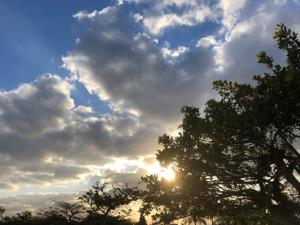
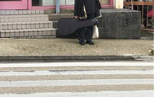

うるがいの話 ある日
最新: 市立図書館のシステムの今【うるがいの話 ある日】とは 一日だけのプログです
『うるがいの話』の最新一日だけのプログで、通信料が少なく経済的だ。カニの画像をクリックすると全ての日付が載る『うるがいの話』サイトを表示します
|
|
【うるがいの話】 うるがい(ｳﾙｶﾞｲ urugai)とは、『もずくがに』の名前でとても大きくなります。 |
|---|---|
|
|
【カミマヤーの話】 猫のことを方言でマヤーといいます。カミマヤー（kamimayaa）とは、神の猫のことです。 |
|
【たながぁの音楽】 たながぁ（ﾀﾅｶﾞｰ tanagaa）とは手長えびのことで、何種類かあり大きいのは車 エビぐらいになります。 |

|
【ぶながぁの話】 ぶながぁ(ﾌﾞﾅｶﾞｰ bunagaa)とは、赤い髪の毛、赤い身体、そして身長は１ｍ２０ｃｍ ぐらい、川の蟹を食べているの目撃された。場所は沖縄県国頭郡大宜味村のと ある村僕の隣近所に住んでいる爺さんから、聞いた話です。 |
|
|
【ギーマの話】 ギーマ(giima)とは、山原の里山に咲くスズランに似た、 花を付けます。実は食べられます、 気が付くと口の周りが紫になっています。 |
2023年01月31日 (火）市立図書館のシステムの今
15:08
 
那覇市立図書館のシステムで、１月２１日から書籍の検索ができるようなって
いた。この前、借りていた３冊の本を検索すると何故だが検索されなかった。
いろいろ、試してみると検索結果は中央図書館の物だけだった。そして昨日試
すと他の図書館の物も検索結果に出た、ただし、相変わらず借りている３冊は
検索されない。もしかして、私が借りているから？と思い今日、返却した。そ
して家に帰り検索すると、正しく検索され、貸出中も正しく反映されていた。
予約機能がまだ復活していないが、復旧はもう少しである。予約したい本は既
に決めている（DTM入門のための基礎知識・・・）。
ジョギングの途中、歩道で信号待ちをしていると向かいでギターのケースを持
った小母さんが立っていた。同じようにギターケースを持った人達を、たまに
見かける。近くの公民館で集まって部活をしているのだろうか、イイナ、ギタ
ーは老人でもバリバリに演奏できるから、と思った。練習時間は少しだが、私
の右手の小指もギターたこが出来始めた。
１５時０２分 ビットコインの総資産 ￥８、６０７（↓３００）